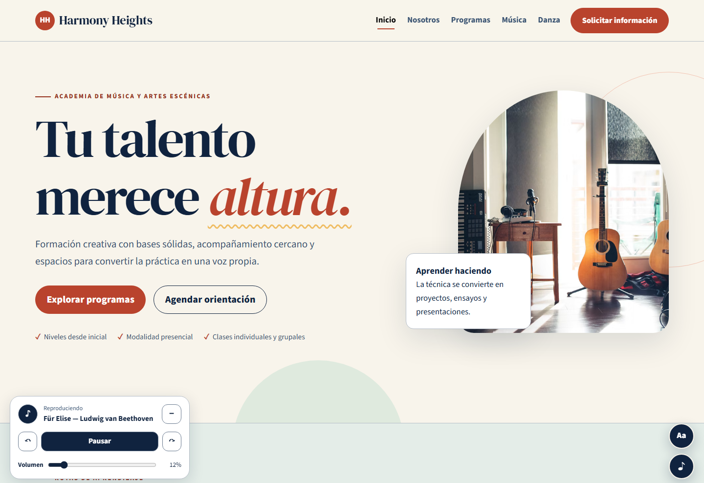
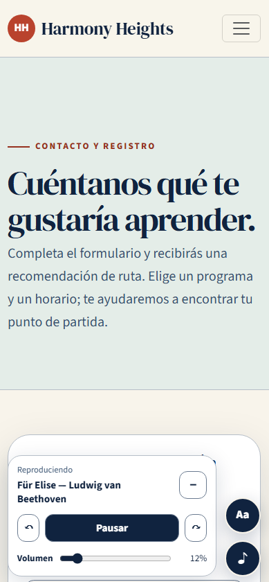

Información dispersa
Los programas no tenían una estructura clara ni páginas especializadas.
Cómo diseñamos y desarrollamos Harmony Heights, un micrositio académico responsive con frontend interactivo y un backend pequeño.
Los programas no tenían una estructura clara ni páginas especializadas.
La captación podía causar demoras y pérdida de información.
Faltaban adaptación móvil, jerarquía, interacción y accesibilidad.
Los PDF definieron el alcance: varias páginas, HTML semántico, CSS, JavaScript, Bootstrap, formulario, UX/UI y evidencia técnica.
La dirección combina una base editorial clásica con componentes modernos: tradición para comunicar confianza y formas actuales para expresar creatividad.
Azul profundo, crema, coral, menta y dorado.
Serif expresiva y sans serif legible.
Tarjetas amplias y bordes suaves.
Etiqueta, título, descripción y CTA.

Header, nav, main, section, article, aside y footer.
Variables, Grid, Flexbox, foco, media queries y movimiento reducido.
Menú, grilla, formularios, tabla, botones y acordeón.
<main id="contenido"> · <section aria-labelledby="programas"> · <footer>El catálogo cambia por área manipulando el DOM.
Transiciones CSS sencillas en tarjetas y controles.
Validación y guardado confirmado en Firebase.
localStorage conserva ajustes del usuario.
card.hidden = filter !== "todos" && card.dataset.category !== filter;Tamaño de texto, fuente legible, contraste alto, grises y enlaces resaltados.
Animación reducida, foco visible, salto al contenido y controles etiquetados.
Preferencias persistentes, volver arriba y música con volumen bajo y controles visibles.
Cuatro pistas clásicas con pausa, cambio de obra y volumen. Si el navegador bloquea el inicio automático, el audio espera una interacción del usuario.
Las reglas validan los datos y los permisos antes de guardarlos.
El administrador puede consultar solicitudes, buscar por nombre o correo y filtrar por programa.
CSV: exportación de las filas filtradas para Excel o Google Sheets.

Las reglas se verifican en el emulador. La activación en la cuenta Firebase sigue los pasos de FIREBASE.md.
Puedes navegar y probar el sitio dentro de esta diapositiva. Requiere conexión a internet; si no carga, usa el enlace para abrirlo en otra pestaña.
Harmony Heights organiza la oferta, mejora la experiencia móvil, incorpora accesibilidad y convierte el interés del visitante en un registro comprensible.
Seis páginas conectadas y responsive.
Filtros, animación, accesibilidad, mapa y audio.
Solicitudes en Firebase y exportación CSV.